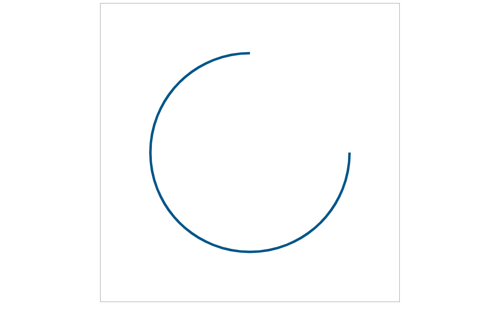

原文出处:本文由博客园博主溢杨年华提供。
原文连接:https://www.cnblogs.com/littleSpill/p/11022600.html
原文连接:https://www.cnblogs.com/littleSpill/p/11022600.html
canvas是定义在浏览器上的画布。它不仅仅是一个标签元素更是一个编程工具是一套编程的接口。利用它可以开发出很多东西，比如动画，游戏，动态的图表等富有变现力和感染力的应用。还可以开发出绚丽的3D动态效果。接下来我们一起学习！
一、 创建canvas
1 <!DOCTYPE html>
2 <html lang="en">
3
4 <head>
5 <meta charset="UTF-8">
6 <meta name="viewport" content="width=device-width, initial-scale=1.0">
7 <meta http-equiv="X-UA-Compatible" content="ie=edge">
8 <title>canvas基础</title>
9 </head>
10
11 <body>
12 <canvas id='canvas' width='700' height='400' style="border: 1px solid #aaa;display:block;margin:50px auto "></canvas>
13 </body>
14
15 </html>看一下现在的效果:
除了上述代码那样指定canvas的宽高，还可以在js中这样指定:
1 var canvas = document.getElementById('canvas');
2
3 canvas.width = 700;
4 canvas.height = 400;
这样边框内就是一个画布了，接下来我们就可以在这画布里进行绘制了。
二 、 画一条线段
1 <script>
2 window.onload = function () {
3 var canvas = document.getElementById('canvas'); //获取canvas
4
5 canvas.width = 700; //设定canvas的宽度
6 canvas.height = 400; //设定canvas的高度
7
8 if (canvas.getContext('2d')) {
9
10 var context = canvas.getContext('2d'); //获取绘图的上下文环境
11
12 context.moveTo(100, 100) //画笔的起始位置
13 context.lineTo(500, 300) //画笔的结束位置
14 context.lineWidth = 5; //线的宽度
15 context.strokeStyle = '#005588' //线的颜色
16 context.stroke() //开始绘制
17
18 } else {
19 alert('您的浏览器不支持canvas,请更换浏览器尝试~')
20 }
21 }
22 </script>看一下效果图:
三 、 画一个三角形并着色
1 <script>
2 window.onload = function () {
3 var canvas = document.getElementById('canvas'); //获取canvas
4
5 canvas.width = 700; //设定canvas的宽度
6 canvas.height = 400; //设定canvas的高度
7
8 if (canvas.getContext('2d')) {
9
10 var context = canvas.getContext('2d'); //获取绘图的上下文环境
11
12 context.moveTo(100, 100) //画笔的起始位置
13 context.lineTo(500, 300) //画笔的结束位置
14 context.lineTo(100, 300) //画笔的结束位置
15 context.lineTo(100, 100) //画笔的结束位置
16
17 context.fillStyle='rgb(2,100,30)' //设置填充颜色
18 context.fill() //开始进行着色
19
20 context.lineWidth = 5; //线的宽度
21 context.strokeStyle = 'red' //线的颜色
22 context.stroke() //开始绘制
23
24 } else {
25 alert('您的浏览器不支持canvas,请更换浏览器尝试~')
26 }
27 }
28 </script>
效果图:
四 、 绘制两个图形
1 <script>
2 window.onload = function () {
3 var canvas = document.getElementById('canvas'); //获取canvas
4
5 canvas.width = 700; //设定canvas的宽度
6 canvas.height = 400; //设定canvas的高度
7
8 if (canvas.getContext('2d')) {
9
10 var context = canvas.getContext('2d'); //获取绘图的上下文环境
11
12 context.beginPath() //开始一个新的路径绘制
13
14 context.moveTo(100, 100) //画笔的起始位置
15 context.lineTo(500, 300) //画笔的结束位置
16 context.lineTo(100, 300) //画笔的结束位置
17 context.lineTo(100, 100) //画笔的结束位置
18
19 context.closePath() //结束一个路径的绘制
20
21 context.fillStyle='rgb(2,100,30)' //设置填充颜色
22 context.fill() //开始进行着色
23
24 context.lineWidth = 5; //线的宽度
25 context.strokeStyle = 'red' //线的颜色
26 context.stroke() //开始绘制
27
28 context.beginPath() //开始一个新的路径绘制
29
30 context.moveTo(100,50) //画笔的起始位置
31 context.lineTo(600,300) //画笔的结束位置
32
33 context.closePath() //结束一个路径的绘制
34
35 context.lineWidth = 3; //线的宽度
36 context.strokeStyle = 'yellow' //线的颜色
37 context.stroke() //开始绘制
38
39
40 } else {
41 alert('您的浏览器不支持canvas,请更换浏览器尝试~')
42 }
43 }
44 </script>
效果图:
五 、 绘制一个七巧板
1 <script>
2 var tangram = [
3 { p: [{ x: 0, y: 0 }, { x: 800, y: 0 }, { x: 400, y: 400 }], color: '#caff67' },
4 { p: [{ x: 0, y: 0 }, { x: 400, y: 400 }, { x: 0, y: 800 }], color: '#67becf' },
5 { p: [{ x: 800, y: 0 }, { x: 800, y: 400 }, { x: 600, y: 600 }, { x: 600, y: 200 }], color: '#ef3d61' },
6 { p: [{ x: 600, y: 200 }, { x: 600, y: 600 }, { x: 400, y: 400 }], color: '#f9f51a' },
7 { p: [{ x: 400, y: 400 }, { x: 600, y: 600 }, { x: 400, y: 800 }, { x: 200, y: 600 }], color: '#a594c0' },
8 { p: [{ x: 200, y: 600 }, { x: 400, y: 800 }, { x: 0, y: 800 }], color: '#fa8ecc' },
9 { p: [{ x: 800, y: 400 }, { x: 800, y: 800 }, { x: 400, y: 800 }], color: '#f6ca29' },
10 ]
11 window.onload = function () {
12 var canvas = document.getElementById('canvas'); //获取canvas
13
14 canvas.width = 800; //设定canvas的宽度
15 canvas.height = 800; //设定canvas的高度
16
17 if (canvas.getContext('2d')) {
18
19 var context = canvas.getContext('2d'); //获取绘图的上下文环境
20
21 for (var i = 0; i < tangram.length; i++) {
22 draw(tangram[i], context)
23 }
24
25
26 } else {
27 alert('您的浏览器不支持canvas,请更换浏览器尝试~')
28 }
29 }
30
31 function draw(piece, context) {
32 context.beginPath();
33 context.moveTo(piece.p[0].x, piece.p[0].y);
34 for (var i = 1; i < piece.p.length; i++) {
35 context.lineTo(piece.p[i].x, piece.p[i].y)
36 }
37 context.closePath();
38
39 context.fillStyle = piece.color;
40 context.fill();
41
42 context.strokeStyle = 'black';
43 context.lineWidth = 3;
44 context.stroke();
45
46 }
47 </script>
效果图:
六 、 绘制一段弧
1 <script>
2 window.onload = function () {
3 var canvas = document.getElementById('canvas'); //获取canvas
4
5 canvas.width = 600; //设定canvas的宽度
6 canvas.height = 600; //设定canvas的高度
7
8 if (canvas.getContext('2d')) {
9
10 var context = canvas.getContext('2d'); //获取绘图的上下文环境
11
12 context.lineWidth = 5;
13 context.strokeStyle = '#005588';
14 context.arc(300, 300, 200, 0, 1.5 * Math.PI);
15 context.stroke();
16
17 } else {
18 alert('您的浏览器不支持canvas,请更换浏览器尝试~')
19 }
20 }
21 </script>context.arc各参数的含义:
1 context.arc(
2 centerx , //圆心的x轴坐标位置
3 centery, //圆心的y轴坐标位置
4 radius, //圆弧半径的值
5 startingAngle, //以哪个弧度制开始
6 endingAngle, //在哪个弧度制结束
7 anticlockwise=false //顺时针方向绘制,为true则逆时针。默认为顺时针。
8 )
效果图:

改为逆时针的话，在context.arc里面添加参数true
context.arc(300, 300, 200, 0, 1.5 * Math.PI,true);
效果图:

七 、 绘制多段弧 和 着色
1 <script>
2 window.onload = function () {
3 var canvas = document.getElementById('canvas'); //获取canvas
4
5 canvas.width = 1000; //设定canvas的宽度
6 canvas.height = 600; //设定canvas的高度
7
8 if (canvas.getContext('2d')) {
9
10 var context = canvas.getContext('2d'); //获取绘图的上下文环境
11
12 context.lineWidth = 5;
13 context.strokeStyle = '#005588';
14
15 for (var i = 0; i < 10; i++) {
16 context.beginPath();
17 context.arc(50 + i * 100, 100, 40, 0, 2 * Math.PI * (i + 1) / 10);
18 context.closePath();
19 context.stroke();
20 }
21
22 for (var i = 0; i < 10; i++) {
23 context.beginPath();
24 context.arc(50 + i * 100, 300, 40, 0, 2 * Math.PI * (i + 1) / 10);
25
26 context.stroke();
27 }
28
29 context.fillStyle = '#005588'
30 for (var i = 0; i < 10; i++) {
31 context.beginPath()
32 context.arc(50 + i * 100, 500, 40, 0, 2 * Math.PI * (i + 1) / 10);
33 context.closePath()
34
35 context.fill()
36 }
37
38 } else {
39 alert('您的浏览器不支持canvas,请更换浏览器尝试~')
40 }
41 }
42 </script>
效果图:
可以看出绘制多个弧也是使用beginPath()和closePath()。但是绘制出来的弧自动的把首尾连接起来了，成了一个封闭的弧。这是因为closePath()的原因，如果想只是展示不封闭的弧，只需要把context.closePath()这段代码去掉就行。beginPath()和closePath()并不一定成对出现。填充的时候，有closePath()和没有closePath()效果是一样的。